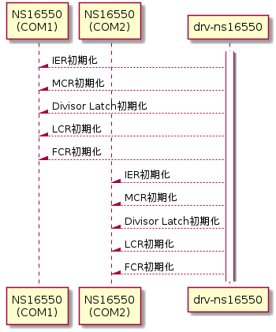
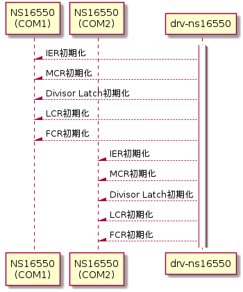

デバイス初期化機能
起動時にNS16550またはその互換シリアルポートデバイスを下記シーケンスの通りに初期化する。
シーケンス図


IER(Interrupt Enable Register)初期化
起動時は全割込みを禁止にするため、IERを下記の通りに設定する。
Interrupt Enable Register 初期化
| I/O port | bit | 値 | 意味 | 備考 | |
| COM1 | COM2 | ||||
| 0x03F9 | 0x02F9 | 7-4 | 0 | 予約 | |
| 3 | 0 | MSR割込み禁止 | MSR: Modem Status Register | ||
| 2 | 0 | LSR割込み禁止 | LSR: Line Status Register | ||
| 1 | 0 | THR割込み禁止 | THR: Transmit Holding Register | ||
| 0 | 0 | RBR割込み禁止 | RBR: Receiver Buffer Register | ||
MCR(Modem Control Register)初期化
OUT、RTS、DTSなどのpin出力設定を初期化するために、MCRを下記の通りに設定する。
Modem Control Register 初期化
| I/O port | bit | 値 | 意味 | 備考 | |
| COM1 | COM2 | ||||
| 0x03FC | 0x02FC | 7-5 | 0 | 予約 | |
| 4 | 0 | 通常（非ループバック）モード | |||
| 3 | 1 | OUT2=H(割り込み禁止) | |||
| 2 | 1 | OUT1=L | 未使用pin | ||
| 1 | 0 | RTS=L | RTS: Request To Send | ||
| 0 | 0 | DTR=L | DTR: Data Terminal Ready | ||
Divisor Latch 初期化
転送レートを9,600bpsに初期化するため、Divisor Latch を下記手順で設定する。
Divisor Latch 初期化
| 手順 | I/O port | bit | 値 | 意味 | 備考 | |
| COM1 | COM2 | |||||
| 1 | 0x03FB | 0x02FB | 7 | 1 | Divisor Latch アクセスON | |
| 6-0 | - | 変更しない | ||||
| 2 | 0x03F8 | 0x02F8 | 7-0 | 0x00 | Divisor Latch 上位 | 転送レート=9,600[bps] |
| 3 | 0x03F9 | 0x02F8 | 7-0 | 0x0C | Divisor Latch 下位 | |
| 4 | 0x03FB | 0x02FB | 7 | 0 | Divisor Latch アクセスOFF | |
| 6-0 | - | 変更しない | ||||
Divisor Latch、IER、および、THRはI/Oポートアドレスを共有しており、LCR(Line Control Register)のbit7のDLAB(Divisor Latch Access Bit)によってアクセス切り替えを行ってアクセスするため、手順1にてDivisor Latchアクセスに切り替えて、手順4にて切り戻す。
Divisor Latchと転送レートの関係は下記の通りである。
| Divisor Latchと転送レートの関係式 |
|
LCR(Line Control Register)初期化
シリアル通信設定のために、LCRを下記の通りに設定する。
Line Control Register 初期化
| I/O port | bit | 値 | 意味 | 備考 | |
| COM1 | COM2 | ||||
| 0x03FB | 0x02FB | 7 | 0 | 非Divisor Latchアクセス | |
| 6 | 0 | Break信号送出無し | |||
| 5 | 0 | 固定パリティしない | bit3-4設定有効 | ||
| 4 | 0 | 奇数パリティ | 但し、bit3により無効 | ||
| 3 | 0 | パリティbit無し | |||
| 2 | 0 | ストップbit長1 | |||
| 1-0 | 3 | データbit長8 | |||
FCR(FIFO Control Register)初期化
受信割込みタイミングとFIFO有効化設定のために、FCRを下記の通りに設定する。
FIFO Control Register 初期化
| I/O port | bit | 値 | 意味 | 備考 | |
| COM1 | COM2 | ||||
| 0x03FA | 0x02FA | 7-6 | 3 | 受信FIFOトリガレベル=14[byte] | |
| 5-3 | 0 | 予約 | |||
| 2 | 1 | 送信FIFOリセット | リセット後自動クリア | ||
| 1 | 1 | 受信FIFOリセット | リセット後自動クリア | ||
| 0 | 1 | FIFO有効 | |||